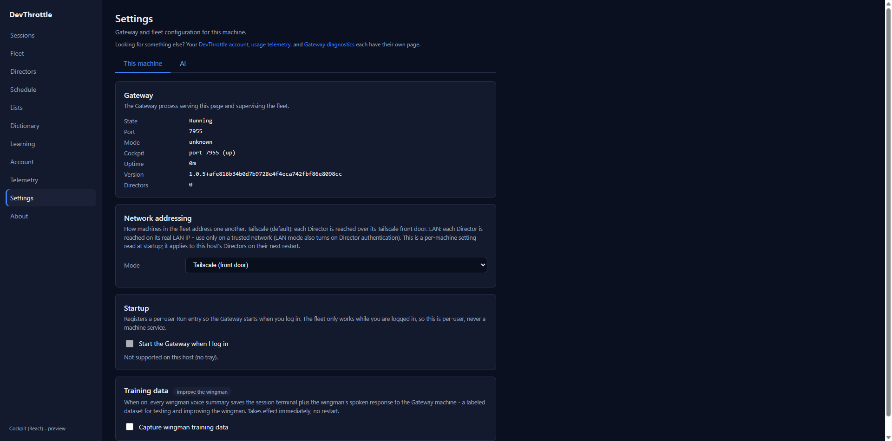
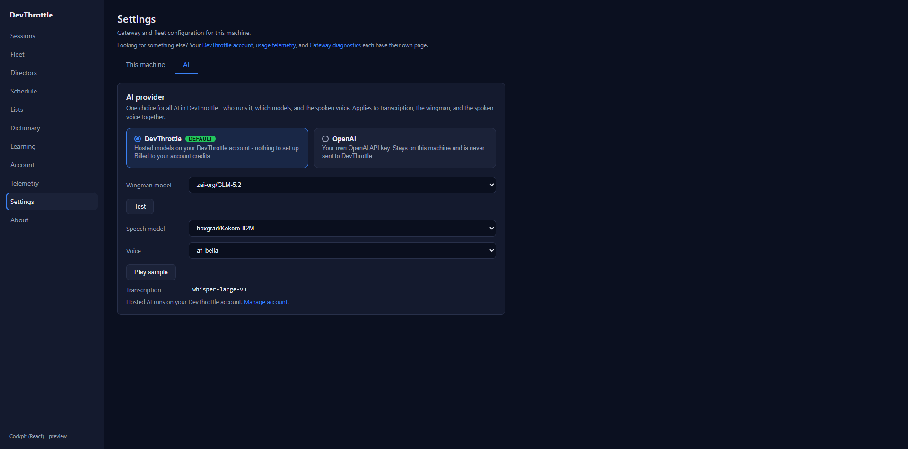
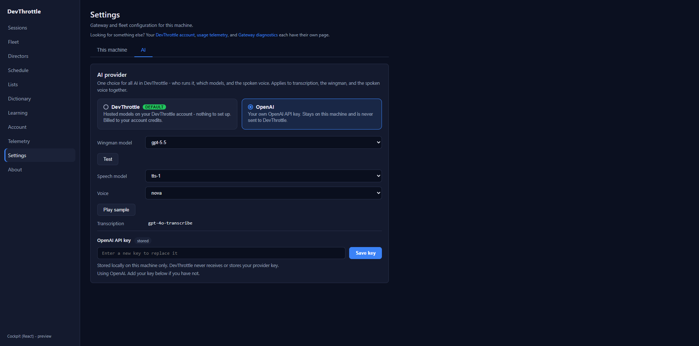

Developer Agent proof - CenCon Development Method. Follow-up to epic #967 (QA sweep). Severity: major.
The left-rail Settings item was an external anchor to /settings, which no page or
endpoint served: a hit fell through the single-page-app fallback to index.html, and the React router
had no /settings route, so it rendered the Not found placeholder. This change ports the
retired Blazor wwwroot/pages/settings.html scope the issue names as a real React page and routes the
nav item to it.
apps/cockpit/src/settings/SettingsView.tsx + settings.css - the new page, two tabs:
apps/cockpit/src/main.tsx - added the real /settings React route.apps/cockpit/src/AppShell.tsx - moved Settings from a dead full-load external anchor
to a real in-app NavLink.packages/client-core/src/settings/settingsClient.ts - the typed same-origin client for the
machine/gateway settings and the vault key-state (names only) + write. The AI tab reuses the existing
client-core/api/ai.ts.Every read/write is same-origin through existing Gateway endpoints (root-relative URLs, never a Director
address): /gateway/settings, /gateway/addressing-mode, /gateway/autostart,
/gateway/wingman/training-capture, /gateway/ai-provider, /gateway/ai/*,
/gateway/tts-voice, /vault/keys. Account, Telemetry, and About keep their own React pages
(ported earlier under #978); the Settings page links to them so nothing is silently omitted.
| Criterion | How it is satisfied | Proof |
|---|---|---|
| Clicking "Settings" opens a working React page (no "Not found"). | The rail item is now a real route; /settings renders SettingsView. |
PASS - screenshots 1, 3 |
| Reads current settings and persists changes through the Gateway same-origin; changes round-trip on reload. | Each tab loads its live snapshot from the Gateway; every control writes through the matching Gateway
PUT. Toggling "Capture wingman training data" in the UI changed the Gateway state from
false to true, and after a full page reload the checkbox was still checked. |
PASS - screenshot 2 (checkbox checked after reload); Gateway GET /gateway/settings
confirmed wingmanTrainingCapture:false -> true |
| No secret (token/key) is present in the shipped browser bundle. | The shell carries no credential; the key panel reads only the vault key names (set/not-set) and writes
the key write-only - there is no GET /vault/keys/{name} value read anywhere in the bundle. |
PASS - scan of apps/cockpit/dist/assets/*.js found no sk-*,
__GW_TOKEN__, gateway.token, or hex secret; served index.html injects no token |
| Verified live on an isolated Gateway. Full build gate clean. | Proven against an isolated Gateway console host (CC_DIRECTOR_ROOT + CC_VAULT_PATH
pointed at a scratch dir, auth off for debugging), never the user's live config. All four build gates ran clean. |
PASS - see below |
| Gate | Result |
|---|---|
npm run build --workspace @devthrottle/cockpit (tsc + vite) | built, 0 errors |
npm run lint (eslint .) | 0 problems |
npm run typecheck (client-core + cockpit + mobile) | 0 errors |
dotnet build src/CcDirector.Gateway -p:RunCockpitBuild=true | Build succeeded, 0 warnings, 0 errors |
dotnet build cc-director.sln | Build succeeded, 0 warnings, 0 errors |



No architecture or security-posture drift. The page is a pure client of endpoints that already exist and are already
used (the mobile AI settings screen and the retired Blazor settings page used the same routes). It upholds the
Gateway-only-ingress rule (root-relative URLs) and security rule DT-05 (no secret in the browser). No
docs/cencon/ manifest or security-profile change is required.